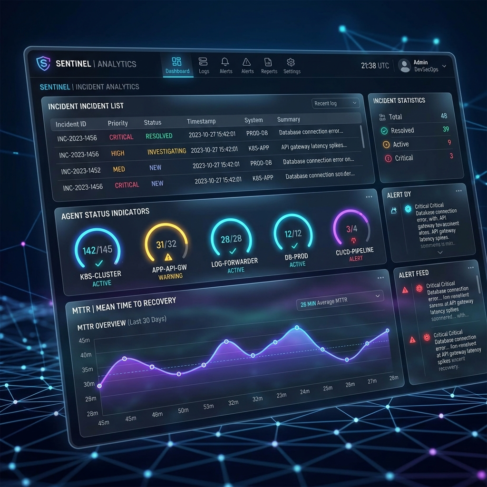
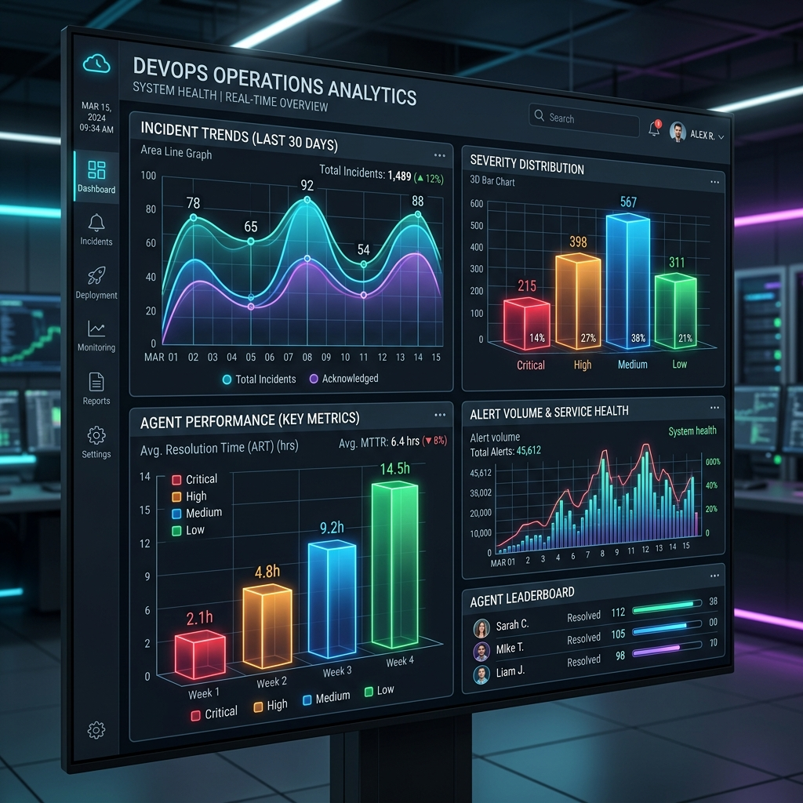
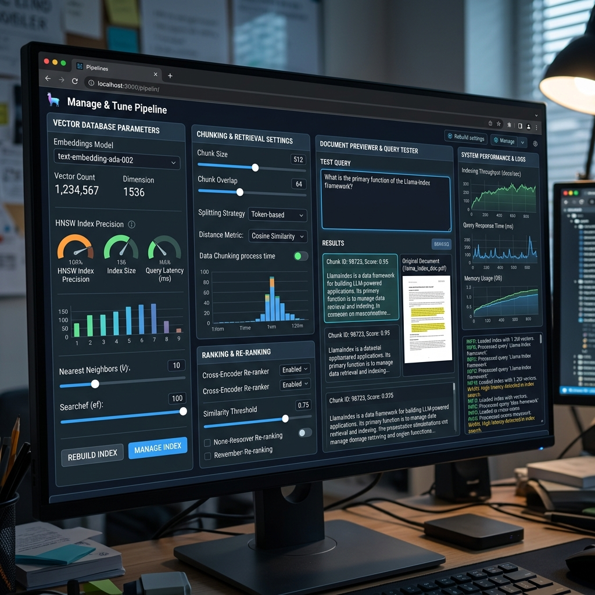

System Overview
DevOps is designed to eliminate the manual overhead of incident response. By integrating state-of-the-art LLMs with a retrieval-augmented grounding layer, the system provides deterministic actions from non-deterministic inputs.
In the modern DevOps landscape, speed is the only metric that matters. DevOps achieves a 96.7% reduction in MTTR by automating the entire lifecycle of an incident—from initial log ingestion to final JIRA resolution and Slack notification.
Orchestration Layer
The system is built on a StateGraph foundation, enabling complex conditional
routing and parallel processing.
TypedDict State Schema
A unified state object traverses the graph, accumulating context at each node. Parallel
fan-out is handled via Annotated list reducers.
# Raw input logs
classification: str # gpt-4o-mini output
severity: str # P1-P4 assessment
rag_context: Annotated[list, operator.add] # Parallel accumulation
root_cause: str
remediation_plan: str cookbook: str
Agent Roster
| # | Agent | Model Configuration | Primary Role |
|---|---|---|---|
| 01 | Classifier | gpt-4o-mini (t: 0.1) | Structure logs & extract entities |
| 02 | Severity | gpt-4o-mini (t: 0.1) | Risk assessment & triage routing |
| 03 | Analyst | gpt-4o (t: 0.2) | RAG-grounded RCA with LanceDB |
| 04 | Planner | gpt-4o (t: 0.2) | Remediation strategy generation |
| 05 | Synthesizer | gpt-4o-mini (t: 0.3) | Operational cookbook production |
Interface Design
A premium React-based dashboard providing high-fidelity visual control over the agent pipeline.
01. Analysis Command Center
The primary workspace for log ingestion and real-time agent tracking. Built with glassmorphism principles and Outfit typography.

02. Operational Analytics
Advanced data visualization for incident trends, resolution efficiency, and agent accuracy metrics.

03. RAG Tuning Studio
A technical interface for managing the vector search layer, allowing SREs to tune knowledge grounding parameters.

Implementation Guide
Environment Configuration
DevOps requires a Python 3.11+ environment and access to OpenRouter for LLM orchestration.
$ cd backend
$ python -m venv .venv
$ source .venv/bin/activate
# Windows:.venv\Scripts\activate
$ pip install -r requirements.txt
$ pip install -e .
# 2. Configure Environment
# Edit backend/.env with your API keys
$ uvicorn api.main:app --reload --port 8000
# 3. Initialize React Frontend
# In a new terminal (root directory)
$ pnpm install
$ pnpm run dev
For production deployment, use pnpm run build to generate the static assets in
the dist/ folder, which can be served by any web server (Nginx, Vercel, etc.).
Future Roadmap
The next phase of DevOps development focuses on closing the feedback loop with automated execution nodes.